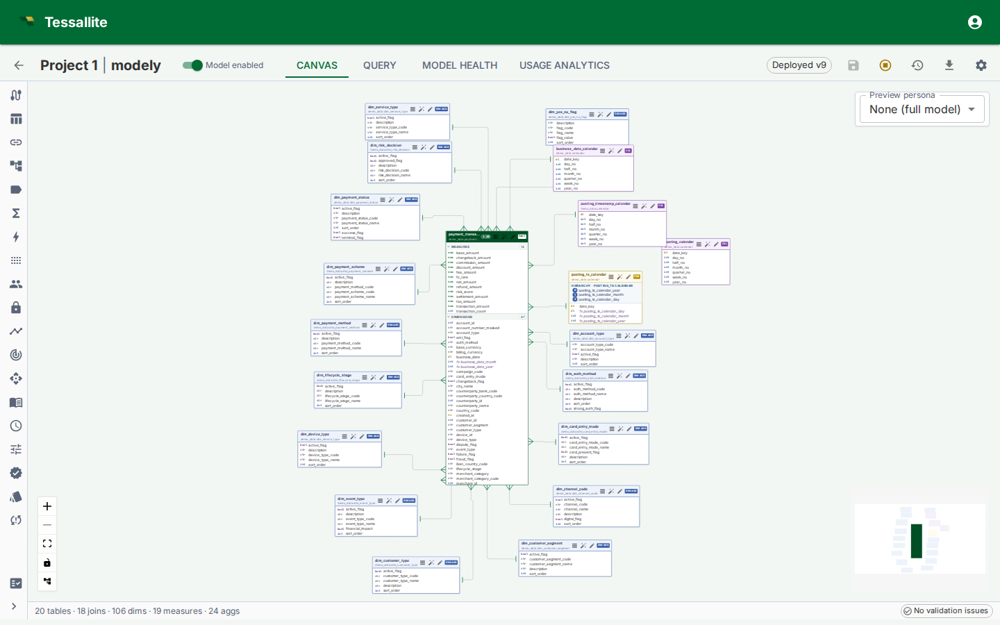
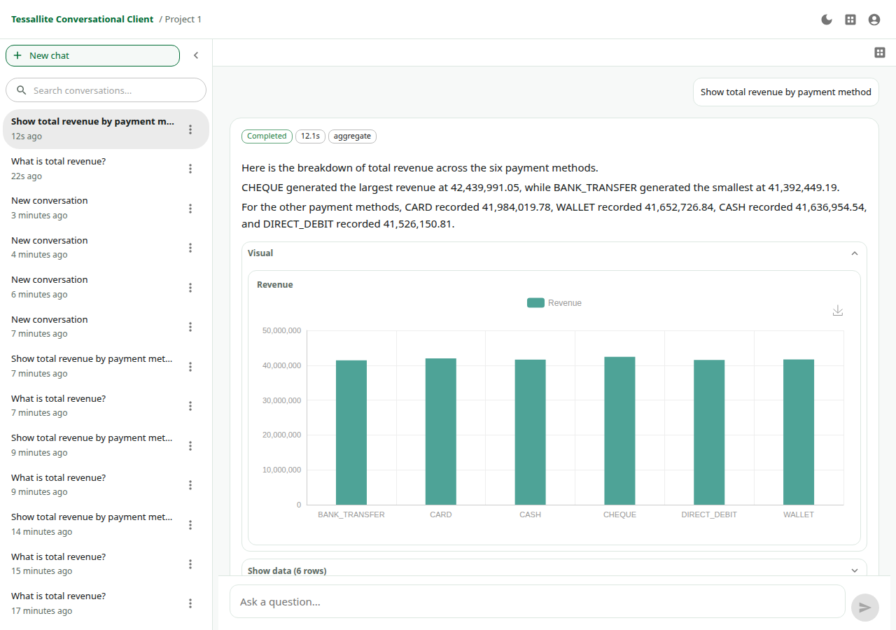
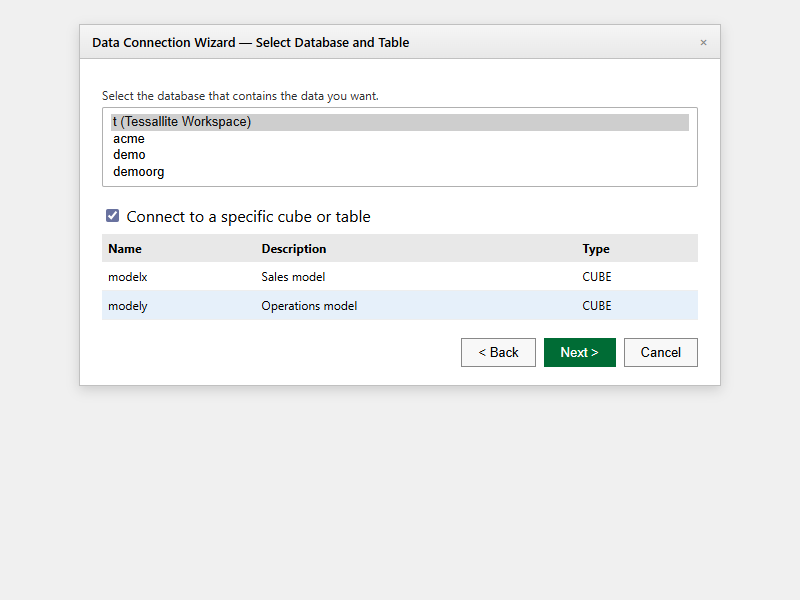

Model
Define dimensions, measures, joins, calendars, hierarchies, glossary terms, and model versions once.
Governed semantic layer for BI, Excel, and AI
Tessallite sits between your BI tools and source data. It maps raw tables to approved business definitions, enforces access rules, routes each query through the fastest safe path, and gives dashboards, spreadsheets, APIs, and AI agents the same trusted answer.



Product category
Tessallite gives platform teams one controlled layer for metric definitions, data access, query routing, and business-facing metadata. To the tools, Tessallite looks like a database. To the business, it becomes the place where important numbers have one approved meaning.
Define dimensions, measures, joins, calendars, hierarchies, glossary terms, and model versions once.
Apply workspace roles, project access, personas, row security, column security, and data tags consistently.
Serve each query through an aggregate, pocket table, or source path depending on what is safe and accurate.
Expose owners, freshness, lineage, route details, query logs, and model health so teams can trust the answer.
Product proof
The public site now leads with the working screens evaluators need to understand: modeller canvas, conversational agent, and Excel connection. The full product screens page describes what each surface does and when to use it.
Shows source tables, joins, measures, dimensions, aggregates, pockets, validation state, and model health in one graph-led workspace.
Answers questions from approved model context, glossary terms, persona rules, and traceable query steps.

Lets analysts work from familiar workbook and PivotTable patterns while still using governed model definitions.
Enterprise control
Tessallite does not treat governance as a separate brochure page. The same access checks apply when a user asks through Excel, BI, SQL, an API, or the conversational agent.
Personas and roles shape which measures, dimensions, hierarchies, and filters each audience can use.
Row security, data tags, and column restrictions prevent sensitive fields from leaking through another client.
Query logs, route badges, owners, freshness, and lineage give reviewers evidence for where numbers came from.
Performance
Tessallite observes repeated query patterns, builds useful aggregates, keeps them refreshed, and falls back to the original source when a prepared answer is not safe for the query shape.
Reusable rollups for common grains and measures reduce repeated scans over large fact tables.
Controlled slices support repeated filtered analysis without opening access to the entire source shape.
If no safe match exists, Tessallite executes through the source path and records the miss for later optimisation.
Connected tools
Tessallite exposes governed models through standard endpoints: JDBC on the PostgreSQL wire protocol, XMLA for Excel and Power BI, REST for application access, and agent context for natural-language questions.
Connect through XMLA, browse cubes, use friendly field names, and refresh workbooks against the deployed model.
Use PostgreSQL-compatible clients such as DBeaver, Power BI PostgreSQL, Tableau, pgAdmin, or custom drivers.
Use headless APIs, embedded chat, and the conversational client when the answer needs to live inside another workflow.
Operational readiness
The product includes model health, query logs, usage analytics, impact analysis, schema-change review, refresh history, alerting, and export/import workflows so the semantic layer can be operated, not just designed.
Find invalid dimensions, broken measures, failed aggregates, refresh issues, and warnings before users hit them.
See which questions, reports, and columns are used so model changes can be reviewed with evidence.
Move model and project definitions without copying source credentials, then rebind them in the target environment.
Evaluation to production
Community is for a self-hosted evaluation with the full product surface and practical limits. Enterprise removes operating limits and adds deployment options, support, SSO, and security evidence for production teams.
Free local evaluation with the same modelling, BI, agent, governance, and acceleration surface.
Follow the Docker Compose path, verify the signed bundle, add the licence, and open the local UI.
Use Enterprise for unlimited tenants, models, users, SSO, support SLA, and production deployment guidance.
Book a product walkthrough or start a Community evaluation with the local bundle and public help path.